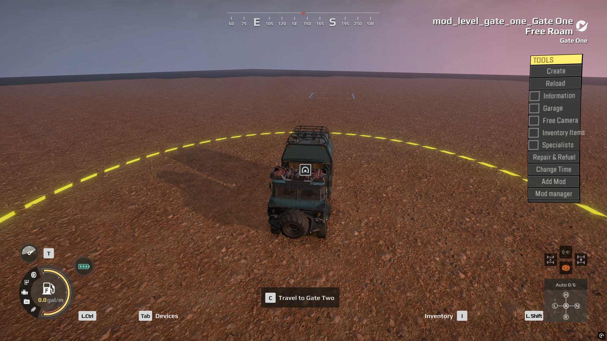
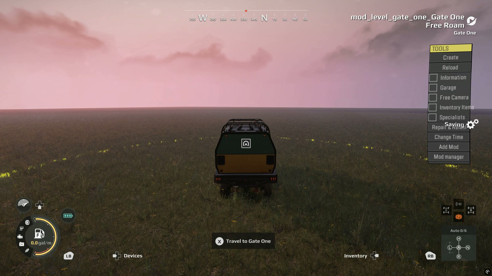

A gateway is a zone that sends the player’s truck to a zone on another map. It is how vanilla joins a surface map to its cave.
Saber’s guide says custom regions of several linked maps are not supported in Expeditions, and that both maps of a gateway must be in the same region. documented Gateways work anyway, and you don’t need a region. Two ordinary standalone maps have been linked and driven between on PC, with a stock truck and a custom one. tested in game
This page is a draft
This rests on one pair of small test maps. The list at the end says what has not been tested.
What you need#
- Two maps, each packed to a
.pak, each with a deploy zone. - A gateway zone on each map, each pointing at the other.
Both maps must be installed. The player starts on one of them like any other custom map.
Step 1: give each map four built-in ground layers#
Do this first, because getting it wrong crashes the game the moment a truck arrives, and the error says nothing useful.
A map’s material needs its layers filled in, and the base layer must be a built-in tile, not a custom one. Saber’s guide says a new material has four layers, and every working map checked has four in its source file. documented
A custom tile can be left out of the compiled map without warning. A map whose only layer was a custom tile compiled with zero ground layers. The game asks what surface a truck is standing on, finds an empty list, and crashes. measured In the editor that map drew black and could not be painted, so black ground is your warning sign.
Step 2: place the gateway zones#
Place a zone on each map and give it a ZonePropertyGateway prop. The tested zones
were round, 30 m across. Keep the target zone clear of models and plants with
collision, because trucks arrive inside it. documented
| Field | What to set |
|---|---|
levelZoneLink |
the target, see step 3 |
cameraDir |
any non-zero direction, such as 1, 0, 0. All zeros gives a black screen documented |
cameraPos |
where the arrival camera starts |
animationTime |
length of the arrival camera move in milliseconds. The test used 3000 |
isShown, isAffectedByZoneSettings |
true |
Both zones need the prop. Saber warns that a gateway whose partner has no
ZonePropertyGateway crashes during the transfer.
documented
Step 3: write the link with the real level name#
This is the step that made the crossing work. Once a map is installed, the game
calls it mod_level_<name>, not level_<name>. The link has to use that name:
mod_level_gate_two || gate_two
The part before || is the level. The part after is the zone on that level.
Packing rewrites this line. The packed map’s zone_settings.json comes out as
level_gate_two || gate_two, a level that doesn’t exist. Each pack needs the link
corrected inside the .pak afterward. tested in game
Two wrong forms, and what they do:
| Link | Result |
|---|---|
level_gate_two \|\| gate_two |
names a level that doesn’t exist |
~#@%$`*level_gate_two~#@%$`* \|\| gate_two |
the prompt shows the raw text, and pressing Let’s go drops you to the main menu tested in game |
That second form is what Saber’s hidden region tool writes. The game only swaps it
for the real name when it loads a region’s files, not in a map’s own .pak.
measured
Grouping the maps in a region#
The crossing doesn’t need a region, but a region is how the game groups linked maps.
A region is a folder at Media\prebuild\<id>, holding regionDesc.json and copies of
each map’s zones and contracts. tested in game
Saber’s hidden region tool writes files the game can’t load, and saving through it again undoes any repair. A working region needs all of this:
| What the region needs | What happens without it |
|---|---|
its data stored under the key mod_region |
the game hangs before the main menu |
a modId of mod_<id> on the second map onward |
the Custom list comes up empty |
uiFuelConsumptionModifier 1, birdsMultiplier 0.5, noFlyZone -1 on each map |
a divide by zero blanks the Expedition setup screen |
caveSettings and uiImages on each map |
the game freezes entering the map |
every zone setting written out, such as isShown |
the region loader fills in no defaults |
links written mod_level_<name> \|\| <zone> |
Let’s go drops you to the main menu |
A region holds a copy of each map’s zones, so rebuild it after every pack.
Locking a map until the player earns it#
A map can stay locked in the Expedition selection list while a gateway still leads into it. Three settings do this, and all of them have worked in game. tested in game
Lock its Expeditions. List the objective that must be finished in
blockerObjectives on each Expedition of that map, including its Free Roam. The
editor hides this field, so write it in the map’s objective_settings.json. A pack
keeps it. Until then, the row shows a lock and can’t be started.
Use the full saved name. The game saves a finished contract as
mod_<region id>_<contract name>, such as mod_gateway_test_Find the Gate. Write that
whole name. A plain name shows the lock, but finishing the contract never clears it.
Contracts played from a map’s own group save under that map’s id instead, so start
the chain from the region’s group.
Hide its camp. Set the deploy zone’s zoneDiscoverability to state 0,
NOT_EXPLORED. The player finds it by driving to it, and can deploy there once the
map unlocks.
blockerMap, the field Saber documents for this, did not lock the row.
One Expedition can span both maps. A two-stage Expedition, reach the gate and then
reach a base site on the far map, finished in game and unlocked Free Roam on both maps.
Its reward opened a working base on the far map. As with gateway links, the pack writes
references to the other map as level_<name>, so correct them to mod_level_<name> in
the .pak, or the far stage can never finish.
Keep module zones hidden until the base exists. Opening a module zone before its base has opened showed an empty Base modules panel and broke every popup after it.
What the player sees#
Drive into the zone and a Travel to prompt appears. Press it, and a popup offers Let’s go and Not now. The truck then arrives in the target zone, and the gateway on that side brings it back.


The popup needs two images, Size_800x520 and Size_800x520_Gray, in uiImages.
documented Without them it shows an empty picture
and logs an error, but the crossing still works.
tested in game
Not yet known#
- Whether a
mod_level_link can be kept through a pack, so that no correction is needed afterward. - How to deliver a linked set of maps to other players, and whether a map installed
through mod.io still goes by
mod_level_<name>. - Whether a mission can span both maps. Without a region, each map keeps its own expedition, and the crossing was tested in free roam only.
- How to stop a region’s maps also being listed on their own. In the Expedition
selection list, a region gets its own group, headed
mod_<id>, and each map keeps its separate group as well. - Whether a cave works. Vanilla caves use
caveSettings, withisCaveandsurfaceMapID, andisCaveon the gateway. None of that has been tried on a custom map. - More than two maps, or more than one gateway on a map.
- Popup images, locked gateways, and anything carried across.
- Any platform other than PC.